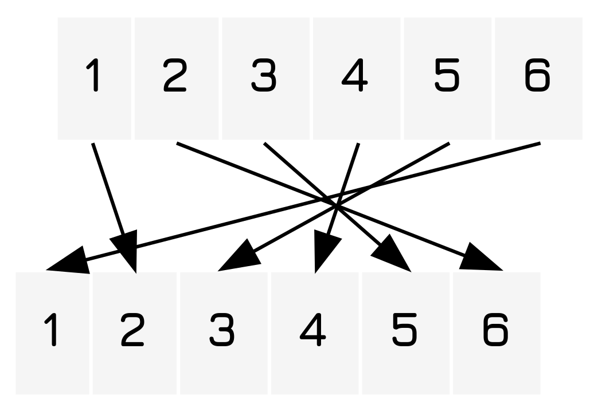

Advent Of Code 2021
Table of Contents
Introduction
The advent of code competition is a fun yearly event that I like to participate in occasionally.
Utility Functions
To start out I will define a utility function to make reading EDN files easier. Because Clojure uses the JVM it usually just assumes you want paths from the project root, whereas in this case I want paths coming from this directory.
(require '[clojure.java.io :as io]) (defn read-edn [f] (->> f io/resource slurp read-string)) (defn read-file [f] (->> f io/resource slurp))
Day 1: Sonar Sweep
The first problem is fairly simple. We are to take a list of numbers and compare each pair within the list, producing.
Part A
Once that is done we are to add up the total number of increases. This is fairly simple, and the following code does that through a simple recursive function and list destructing. 1 List destructuring is really one of my favorite bits of Clojure's syntax. Yes, it's common, but it's also really useful. We take the first two elements of the list, and compare them to check if they have increased, returning 1 if they have, 0 if they have not. Then we check if the list is empty, if it is we simply return, but if it is not we sum with the function applied to the rest of the list minus the first element.
(ns aoc.1.a (:require [aoc.util :refer [read-edn]])) (defn count-increases [[a b & rst]] (let [rval (if (< a b) 1 0)] (if (empty? rst) rval (+ rval (count-increases (cons b rst)))))) (count-increases (read-edn "./other/advent-of-code-2021-01_input.edn"))
Part B
The second problem is the generation of a three measurement sliding window. To solve this we make a slight modification, adding some further elements in the destructuring bind. Once that is done it's smooth sailing.
(ns aoc.1.b (:require [aoc.util :refer [read-edn]])) (defn count-average-increases [[a b c d & rst]] (let [rval (if (< (+ a b c) (+ b c d)) 1 0)] (if (empty? rst) rval (+ rval (count-average-increases (concat [b c d] rst)))))) (defn ls [s] (+ s 3)) (count-average-increases (read-edn "./other/advent-of-code-2021-01_input.edn")) (ls 5)
Day 2: Dive!
In both cases it was possible to solve the problems in \(O(n)\) time. However, unfortunately, unlike the last one this probably could not be parallelized for matrix math, like I have seen with some of my friends.
Part A
Here we write a simple bit of code to calculate the position of the craft. Here we simply have the string representing the file pre-converted into an EDN. 2 I think this is reasonably within the rules. The lists are basically structured so that I only have to add an extra pair of square brackets to make it a vector. Then we read it in, partition it into a series of 2-tuples, use some destructuring to conduct math to add it to a vector (\(i\) represents the horizontal, \(j\) the vertical) and then we multiply our values together.
(ns aoc.2.a (:require [aoc.util :refer [read-edn]])) (->> "./other/advent-of-code-2021-02_input.edn" read-edn (partition 2) (reduce (fn [[i j] [dir val]] (case dir forward [(+ i val) j] up [i (- j val)] down [i (+ j val)])) [0 0]) (apply *))
Part B
To solve part two we now need to treat the up and down pairs as representing changes to the slope of the list. To do so we simply add a new value representing the slope to the accumulator, known as aim. We then, when looping over it, modify the aim value for up and down commands, and modify the depth during forward commands.
(ns aoc.2.b (:require [aoc.util :refer [read-edn]])) (->> "./other/advent-of-code-2021-02_input.edn" read-edn (partition 2) (reduce (fn [[i j aim] [dir val]] (case dir forward [(+ i val) (+ j (* val aim)) aim] up [i j (- aim val)] down [i j (+ aim val)])) [0 0 0]) (take 2) (apply *))
Day 3: Binary Diagnostic
Whew, these solutions took longer. I think part of what shot me in the foot here was that my solutions were too cute in many ways, unnecessarily using map / reduce functions to process the data, making it harder to read and work with than needed, and as it has been said,
Programs must be written for people to read, and only incidentally for machines to execute.
– Harld Abelson, The Structure and Interpretation of Computer Programs
Part A
Here in our first binary diagnostic we write a rather simple bit of code, really not much more than we would normally do, though the program logic is a bit twistier than the usual.
Basically we take the list, reducing over each element with a function that maps over each character. We add the numeric value of the character, taken by subtracting 48 from it, the ASCII value of the character 0, to the accumulator at the index. Following this we map over our list, selecting the largest values, smoosh it together into a string, and convert it to an integer by parsing the list from binary, which gives us gamma.
Next we simply do a bitwise xor with 12 bits of 1, giving us epsilon.
After this we can just multiply them togetehr.
(ns advent-of-code.day3.1 (:require [clojure.string :as str] [clojure.java.io :as io])) (let [bin (->> "./other/advent-of-code-2021-03_input.txt" (io/resource) (slurp) (str/split-lines)) ɣ (Integer/parseInt (->> (reduce (fn [acc e] (map #(+ (- (int %1) (int \0)) %2) e acc)) (repeat 12 0) bin) (map #(if (< (/ (count bin) 2) %) 1 0)) (apply str)) 2) ɛ (bit-xor ɣ 0xfff)] (* ɣ ɛ))
Part B
Here is the fun part, and the part where we apply recursion 3 See recursion. to solve the problem, and also put ourselves in a somewhat strange world of program logic.
Here we basically define a function that filters the list recursively until only element remains. As the list is approximately halved with each search the total runtime is \(O(n \times log(n))\).
(ns advent-of-code.day3.1 (:require [clojure.string :as str] [clojure.java.io :as io])) (defn bit-filter ([lst comp] (bit-filter lst comp 0)) ([lst comp pos] (if (> (count lst) 1) (let [fval (if (comp (reduce (fn [acc e] (+ (- (int (nth e pos)) (int \0)) acc)) 0 lst) (/ (count lst) 2)) \1 \0)] (bit-filter (filter #(= (nth % pos) fval) lst) comp (inc pos))) (Integer/parseInt (first lst) 2)))) (let [bin (->> "./other/advent-of-code-2021-03_input.txt" (io/resource) (slurp) (str/split-lines)) oxygen-rating (bit-filter bin >=) co2-rating (bit-filter bin <)] (* co2-rating oxygen-rating))
Day 4: Giant Squid
Here we simply write a bit of code to find the winning bingo board and cheat. Ah, cheating, the best way to use code.
Common
won?
The won predicate 4 Also known as a test function. takes two arguments, a list of numbers already played as well as a single board. It then extracts the possible score positions from the board and combines them into a list. Following this it proceeds to check if any of them are a subset of the set of nums. Should this be the case it returns true.
(defn won? [nums board] (->> (concat board (map (fn [col-nth] (map #(nth % col-nth) board)) (range 5))) (some #(subset? % nums))))
vectorify
This is a simple recursive function that just converts everything into a series of vectors, mostly for when I need vectors but I don't get them initially. 5 This is only used once, but having a function makes what I am doing clearer.
(defn vectorify [c] (if (coll? c) (vec (map vectorify c)) c))
score-board
Here our score function that takes the list of numbers played as well as a board and converts it into a score.
(defn score-board [nums board] (* (->> board flatten (filter #(not (contains? (set nums) %))) (apply +)) (last nums)))
#'aoc.4.a/score-board
Part A
Now we put it all together using the noweb syntax in org-mode.
(ns aoc.4.a (:require [clojure.set :refer [subset?]] [aoc.util :refer [read-edn]])) <<vectorify>> <<won>> <<score-board>> (let [{raw-boards :boards moves :moves} (->> "./other/advent-of-code-2021-04_input.edn" read-edn) boards (->> raw-boards (partition 25) (map (partial partition 5)) vectorify) [mov-num winner] (->> (range (count moves)) (some (fn [mov-num] (let [winner (filter (partial won? (set (take mov-num moves))) boards)] (when (not (empty? winner)) [mov-num winner])))))] (score-board (take mov-num moves) winner))
Part B
How for part B we start working on finding the last board to score. To do this we make a slight modification to our initial function and simply ask for the last board to win by filtering out the winning boards until none are left.
(ns aoc.4.b (:require [clojure.set :refer [subset? difference]] [aoc.util :refer [read-edn]])) <<vectorify>> <<won>> <<score-board>> (let [{raw-boards :boards moves :moves} (->> "./other/advent-of-code-2021-04_input.edn" read-edn) boards (->> raw-boards (partition 25) (map (partial partition 5)) vectorify) [mov-num looser] (->> (range (count moves)) (some (fn [mov-num] (let [loosers (filter #(not (won? (set (take mov-num moves)) %)) boards)] (when (empty? loosers) [mov-num (filter #(not (won? (set (take (dec mov-num) moves)) %)) boards)])))))] (score-board (take mov-num moves) looser))
A Better Version
Now I wasn't fully satisfied with that approach as I don't think it is very idiomatic or clear. After finishing Day 6: Lanternfish I realized that a better approach would be to create a function that plays individual rounds of the game, producing lists containing the winners for that round when repeatedly applied.
To do this I create a game object which contains information about the current round, the boards that have won this round, and the boards that have not won. Each iteration of this therefore produces a map of the game state
Game
This is the game record. I chose a record rather than a map because it would be more explicit about the structure of the actual data and more effectively constrains it.
(defrecord Game [round nums boards winners])
play-round
Now we can write some code to play a single round. As you can see we simply take the winners and set the new game :boards field to contain only the set of boards that have not won yet while the :winners field contains all boards that have won thus far. This represents a single round played by the game.
(defn play-round [{round :round nums :nums boards :boards winners :winners}] (let [new-round (inc round) winners (set (filter (partial won? (set (take new-round nums))) boards))] (->Game new-round nums (difference boards winners) winners)))
make-game
The make-game function is also fairly simple. We move the partitioning and loading logic into it, simply taking a file of the correct format and converting it into a game at round 0.
(defn make-game [f] (let [{raw-boards :boards moves :moves} (->> f read-edn) boards (->> raw-boards (partition 25) (map (partial partition 5)) vectorify)] (->Game 0 moves (set boards) #{})))
score-winners
Now we have a little function for scoring each of the winners in a game which uses the score-board function for the scoring logic.
(defn score-winners [{nums :nums round :round winners :winners}] (map (partial score-board (take (dec round) nums)) winners))
Putting It Together
As we can see we now have some functions to simply simulate a game played over time as a series of different lists. From here we simply have to use a function to take numbers from it until it reaches the correct answer, and then it proceeds to score the round at that point, taking the last element.
(ns aoc.4.improved (:require [clojure.set :refer [subset? difference]] [aoc.util :refer [read-edn]])) <<vectorize>> <<won>> <<Game>> <<play-round>> <<make-game>> <<score-winners>> (let [games (iterate play-round (make-game "./other/advent-of-code-2021-04_input.edn"))] (->> [#(when (empty? (:boards %)) %) #(when (not (empty? (:winners %))) %)] (map #(last (score-winners (some % games))))))
Day 5: Hydrothermal Venture
This next problem asks us to find the intersections of various lines. To do this we.
Common
draw-line-segment
Here we introduce a simple function that produces a set of integer or rational coordinates at the natural numbers on the line segment provided by the two coordinates given to the function in a tuple.
(defn draw-line-segment [[[x1 y1] [x2 y2]]] (let [y-diff (- y1 y2) x-diff (- x1 x2) [xmin xmax] (sort [x1 x2]) [ymin ymax] (sort [y1 y2])] (cond (zero? x-diff) (->> (range ymin (inc ymax)) (map (fn [y] [x1 y])) set) (zero? y-diff) (->> (range xmin (inc xmax)) (map (fn [x] [x y1])) set) :else (let [m (if (zero? y-diff) 0 (/ x-diff y-diff)) b (- y1 (* m x1))] (->> (range xmin (inc xmax)) (map (fn [x] [x (+ (* x m) b)])) set)))))
find-intersections
To find the points on which each one intersects we simply consider each point and find the set intersections of it with the rest of the sets. We then (to avoid double-counting) discard the set from the set of coordinates and continue on this new set until all are exhausted.
(defn find-intersections [[f & rest]] (if (empty? rest) #{} (apply union (find-intersections rest) (map (partial intersection f) rest))))
parse-lines
Here we simply parse the list into a series of tuples containing the coordinates.
(defn parse-lines [s] (->> s (str/split-lines) (map (fn [s] (->> (str/split s #"->") (map #(->> (str/split % #",") (map read-string))))))))
Part A
Now to actually execute all we need to do is filter out the unwanted functions, which are in this case are all the functions that are not vertical or horizontal.
(ns aoc.5.a (:require [clojure.set :refer [intersection union]] [clojure.string :as str] [aoc.util :refer [read-file]])) <<draw-line-segment>> <<find-intersections>> <<parse-lines>> (->> "./other/advent-of-code-2021-05_input.txt" read-file parse-lines (filter (fn [[[x1 y1] [x2 y2]]] (or (= x1 x2) (= y1 y2)))) (map draw-line-segment) find-intersections count)
Part B
For this next part we simply remove the filter we used in the last one and let it run again.
(ns aoc.5.b (:require [clojure.set :refer [intersection union]] [clojure.string :as str] [aoc.util :refer [read-file]])) <<draw-line-segment>> <<find-intersections>> <<parse-lines>> (->> "./other/advent-of-code-2021-05_input.txt" read-file parse-lines (map draw-line-segment) find-intersections count)
Day 6: Lanternfish
Part A
Here we basically implement what we can imagine as an entity component system with some basic rules. Each entity in the system has a reproduction time (rep-time) which, for each update of the system, is decremented by one. Should an entity in the system have a rep-time of less than 0 it will create a new entity with a rep-time of 8 and have it's rep-time set to 6.
(ns aoc.6.a (:require [aoc.util :refer [read-edn]])) (defn age [rep-time] (dec rep-time)) (defn reproduce [rep-time] (if (< rep-time 0) [6 8] rep-time)) (defn age-day [fish-list] (->> fish-list (map age) (map reproduce) flatten)) (defn sim-n-days [n initial-state] (->> initial-state (iterate age-day) (take (inc n)) last)) (count (sim-n-days 80 (read-edn "./other/advent-of-code-2021-06_input.edn")))
| #'aoc.6.a/reproduce |
| #'aoc.6.a/age-day |
| #'aoc.6.a/sim-n-days |
| 389726 |
Part B
Here we take a dramatically improved approach by, instead of treating each fish as one number, simply counting the number of fish with a certain time to reproduce. Therefore, each lantern fish is not recorded separately.
Each time we update we simply shift all the values to the lower day number, adding in the case of day 7 being shifted to day 6.
When a set of lantern fish have reached zero we place them back at 6 and we add the same number to day 8.
(ns aoc.6.b (:require [aoc.util :refer [read-edn]])) (defn age-and-reproduce [[n0 n1 n2 n3 n4 n5 n6 n7 n8]] [n1 n2 n3 n4 n5 n6 (+ n0 n7) n8 n0]) (defn load-lanternfish [fish] (reduce #(update %1 %2 inc) (vec (repeat 9 0)) fish)) (defn sim-n-days [n fish] (->> fish load-lanternfish (iterate age-and-reproduce) (take (inc n)) last (reduce +))) (sim-n-days 256 (read-edn "./other/advent-of-code-2021-06_input.edn"))
Day 7: The Treachery of Whales
Here we get into a simple optimization problem where we just have to find the most fuel-efficient position for all crabs. The algorithm I implemented tests all possible positions, giving us and \(O(n^2)\) runtime, though I think that could be improved a fair bit
Part A
Here we simply brute-force the answer.
(ns aoc.7.a (:require [clojure.string :as str] [clojure.java.io :as io])) (defn abs [n] (if (< n 0) (- n) n)) (defn optimize-crabs [crabs] (->> (range (apply min crabs) (apply max crabs)) (map (fn [dist] [dist (reduce + (map #(abs (- % dist)) crabs))])) (reduce (fn [[adist afuel] [dist fuel]] (if (<= fuel afuel) [dist fuel] [adist afuel]))))) (optimize-crabs (map read-string (-> "./other/advent-of-code-2021-07_input.txt" (io/resource) slurp (str/split #","))))
Part B
Now on part b we have the fuel increase with the range, so we make a slight modification.
(ns aoc.7.a (:require [clojure.string :as str] [clojure.java.io :as io])) (defn abs [n] (if (< n 0) (- n) n)) (defn optimize-crabs [crabs] (->> (range (apply min crabs) (apply max crabs)) (map (fn [dist] [dist (reduce + (map #(->> (- % dist) abs inc range (reduce +)) crabs))])) (reduce (fn [[adist afuel] [dist fuel]] (if (<= fuel afuel) [dist fuel] [adist afuel]))))) (optimize-crabs (map read-string (-> "./other/advent-of-code-2021-07_input.txt" (io/resource) slurp (str/split #","))))
TODO Day 8: Seven Segment Search
Here we break out my favorite tool, logic programming 6 Basically it's the class of programming that contains GOFAI.. More specifically, we need to use backwards chaining to find the collection of facts about the translation connections that produce the results we see here.
So let's imagine what we want first. What we want is a translation table that tells us what the inputs should be from the outputs and vise-versa. Something akin to this translation table. 7 Or, if you like diagrams: 
(def trans-table {1 2 2 6 3 5 4 4 5 3 6 1})
This provides us with an obvious starting point. We also know that a letter will correspond to the same letter in each round.
Part A
(ns aoc.8.a (:require [clojure.core.logic :as logic])) (def disp-0 '#{a b c e f g}) (def disp-1 '#{c f}) (def disp-2 '#{a c d e g}) (def disp-3 '#{a c d e g}) (def disp-4 '#{b c d f}) (def disp-5 '#{a b d f g}) (def disp-6 '#{a b d e f g}) (def disp-7 '#{a c f}) (def disp-8 '#{a b c d e f g}) (def disp-9 '#{a b c d f g})